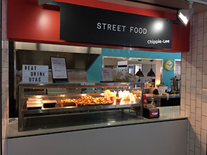
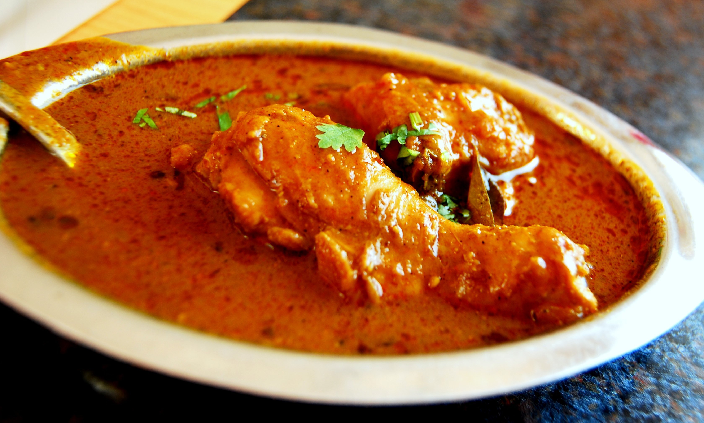
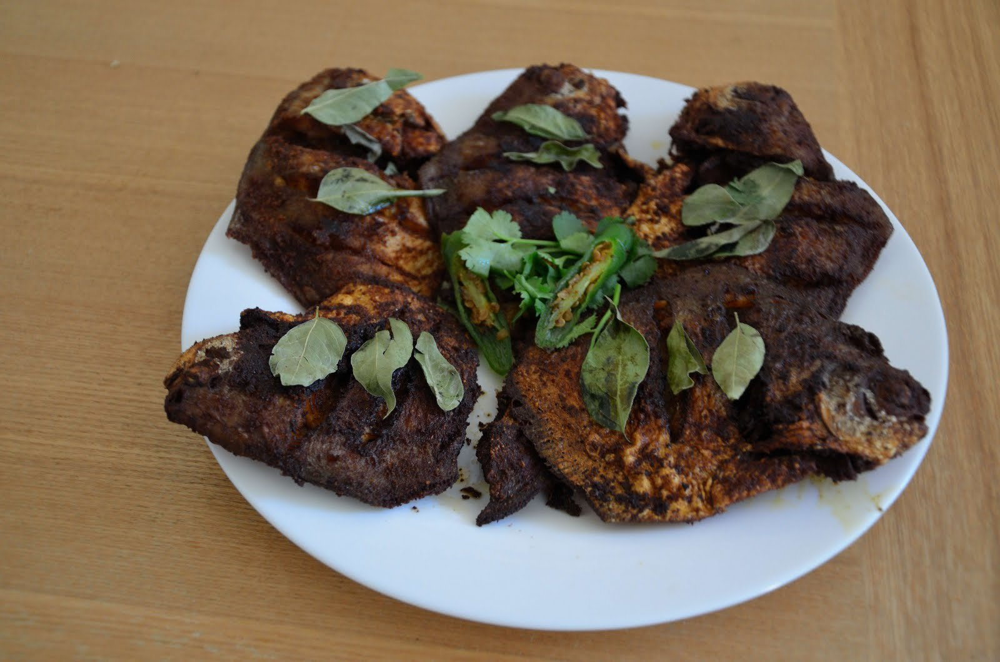
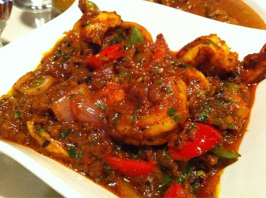
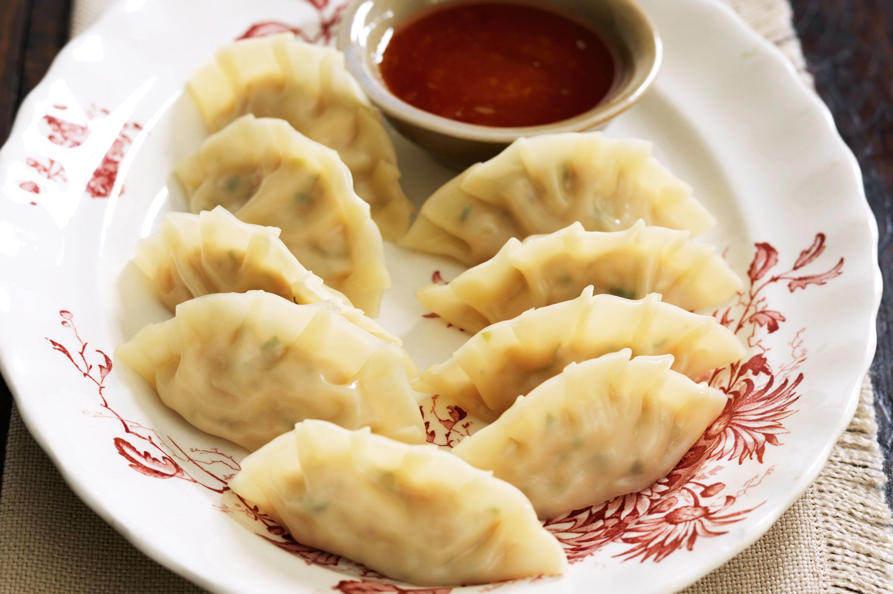

THE REF CAFE

Trading Hours
We're Open At These Times
MONDAY...................(9.00 AM-2.30PM)
TUESDAY..................(9.00 AM-2.30PM)
WEDNESSDAY...............(8.00 AM-2.30PM)
THURSDAY.................(8.00 AM-2.30PM)
FRIDAY...................(8.00 AM-2.30PM)
SAT.........................(CLOSED)
SUNDAY......................(CLOSED)
***CLOSED DURING SEMESTER BREAK
SUZY LEE Bevarges
-
Bouble Tea------------------$5.50
SoftDrinks----------------- $4.50
Cappuccino(Reg)-------------$4.00
Cappuccino(Lrg)-------------$4.50
Latte(Reg)------------------$4.00
Latte(Lrg)------------------$4.20
Hot Chocklet----------------$4.50
Entergy Drinks--------------$4.50
Refectory (Suzy Lee) FOOD MENU
Chicken Chettinad : A famous dish from Tamil Nadu, Chicken Chettinad is special for its unique way of cooking. A variety of marinated spices are applied as a paste on the chicken which is then cooked until it is tender and super juicy.
Price : 13.85 $

Kerala Karimeen Fry Karimeen or the Pearl Spotted Fish is another delicacy from Kerala. The fish is marinated in spices and fried on a low flame until it achieves a deep red hue
Price:12.50$

Prawns Kuzhambu Another delicacy from Tamil Nadu, this irresistible recipe is a perfect example of the typical "heat" of South Indian cuisine. The soft meat of the prawn along with the uniquely marinated masala provides a flavour rich in taste.
Price 14.95$
Other Items
Dumplings(5)----5.95 $

Dumpling is a broad classification for a dish that consists of pieces of dough wrapped around a filling or of dough with no filling.

SHUSI $4.95 Each
Sushi is a Japanese dish of prepared vinegared rice, usually with some sugar and salt, accompanying a variety of ingredients, such as seafood, vegetables, and occasionally tropical fruits.